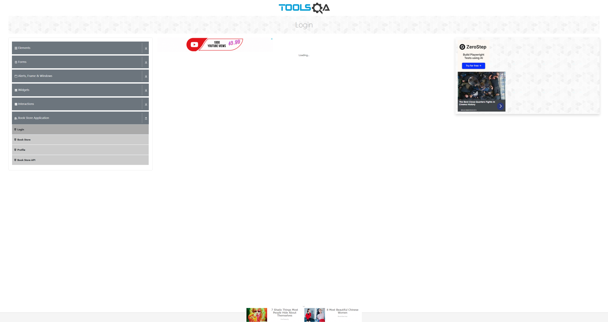
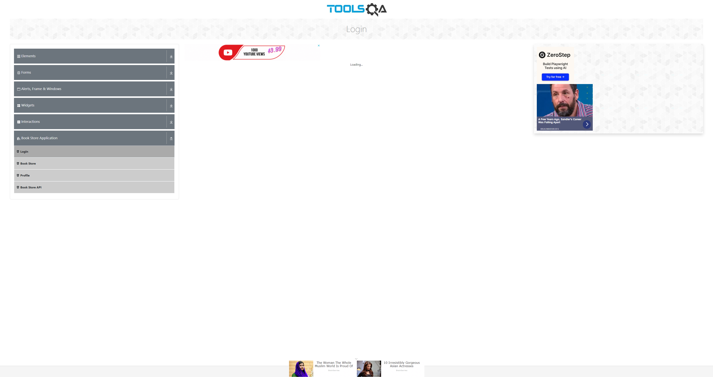
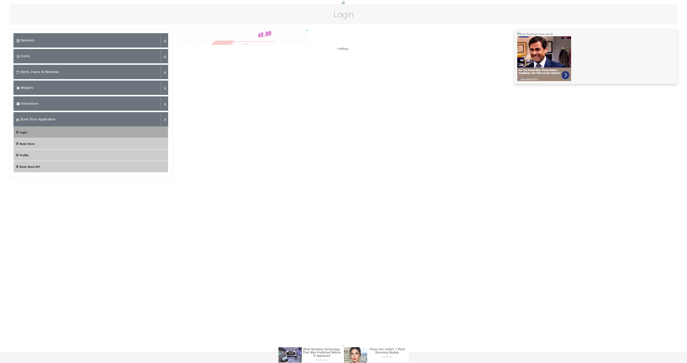

-
bookStoreE2E
8:23:36 AM / 00:00:16:762 Skip
bookStoreE2E
01.12.2024 8:23:36 AM 01.12.2024 8:23:53 AM 00:00:16:762 · #test-id=1WindowsServer2022-10.0-amd64-chromeStatus Timestamp Details Info 8:23:36 AM Skip 8:23:53 AM bookStoreE2Etest skipped Skip 8:23:53 AM -
verifyTextBoxWithInvalidEmail
8:23:36 AM / 00:00:06:572 Pass
verifyTextBoxWithInvalidEmail
01.12.2024 8:23:36 AM 01.12.2024 8:23:43 AM 00:00:06:572 · #test-id=2WindowsServer2022-10.0-amd64-chromeStatus Timestamp Details Info 8:23:36 AM Pass 8:23:43 AM verifyTextBoxWithInvalidEmail got successfully executed -
verifyTextBoxWithInvalidEmail
8:23:55 AM / 00:00:00:000 Skip
verifyTextBoxWithInvalidEmail
01.12.2024 8:23:55 AM 01.12.2024 8:23:55 AM 00:00:00:000 · #test-id=3WindowsServer2022-10.0-amd64-chromeStatus Timestamp Details Info 8:23:55 AM Skip 8:23:55 AM verifyTextBoxWithInvalidEmailtest skipped Skip 8:23:55 AM -
verifyTextBoxWithValidData
8:23:55 AM / 00:00:00:000 Skip
verifyTextBoxWithValidData
01.12.2024 8:23:55 AM 01.12.2024 8:23:55 AM 00:00:00:000 · #test-id=4WindowsServer2022-10.0-amd64-chromeStatus Timestamp Details Info 8:23:55 AM Skip 8:23:55 AM verifyTextBoxWithValidDatatest skipped Skip 8:23:55 AM -
verifyTextBoxWithValidData
8:23:55 AM / 00:00:00:000 Skip
verifyTextBoxWithValidData
01.12.2024 8:23:55 AM 01.12.2024 8:23:55 AM 00:00:00:000 · #test-id=5WindowsServer2022-10.0-amd64-chromeStatus Timestamp Details Info 8:23:55 AM Skip 8:23:55 AM verifyTextBoxWithValidDatatest skipped Skip 8:23:55 AM -
verifyTextBoxWithValidData
8:23:55 AM / 00:00:00:000 Skip
verifyTextBoxWithValidData
01.12.2024 8:23:55 AM 01.12.2024 8:23:55 AM 00:00:00:000 · #test-id=6WindowsServer2022-10.0-amd64-chromeStatus Timestamp Details Info 8:23:55 AM Skip 8:23:55 AM verifyTextBoxWithValidDatatest skipped Skip 8:23:55 AM -
verifyTextBoxWithValidData
8:23:55 AM / 00:00:00:000 Skip
verifyTextBoxWithValidData
01.12.2024 8:23:55 AM 01.12.2024 8:23:55 AM 00:00:00:000 · #test-id=7WindowsServer2022-10.0-amd64-chromeStatus Timestamp Details Info 8:23:55 AM Skip 8:23:55 AM verifyTextBoxWithValidDatatest skipped Skip 8:23:55 AM -
VerifyLoginWithInvalidDataTest
8:23:59 AM / 00:00:10:814 Skip
VerifyLoginWithInvalidDataTest
01.12.2024 8:23:59 AM 01.12.2024 8:24:10 AM 00:00:10:814 · #test-id=8WindowsServer2022-10.0-amd64-chromeStatus Timestamp Details Info 8:23:59 AM Skip 8:24:10 AM VerifyLoginWithInvalidDataTesttest skipped Skip 8:24:10 AM -
bookStoreE2E
8:24:05 AM / 00:00:00:478 Fail
bookStoreE2E
01.12.2024 8:24:05 AM 01.12.2024 8:24:05 AM 00:00:00:478 · #test-id=9WindowsServer2022-10.0-amd64-chromebookStoreE2EStatus Timestamp Details Info 8:24:05 AM Fail 8:24:05 AM bookStoreE2Etest fail Fail 8:24:05 AM -
bookStoreE2E
8:24:05 AM / 00:00:00:001 Skip
bookStoreE2E
01.12.2024 8:24:05 AM 01.12.2024 8:24:05 AM 00:00:00:001 · #test-id=10WindowsServer2022-10.0-amd64-chromeStatus Timestamp Details Info 8:24:05 AM Skip 8:24:05 AM bookStoreE2Etest skipped Skip 8:24:05 AM -
VerifyLoginWithInvalidDataTest
8:24:14 AM / 00:00:11:341 Fail
VerifyLoginWithInvalidDataTest
01.12.2024 8:24:14 AM 01.12.2024 8:24:25 AM 00:00:11:341 · #test-id=11WindowsServer2022-10.0-amd64-chromeVerifyLoginWithInvalidDataTestStatus Timestamp Details Info 8:24:14 AM Fail 8:24:25 AM VerifyLoginWithInvalidDataTesttest fail Fail 8:24:25 AM -
VerifyLoginWithInvalidDataTest
8:24:29 AM / 00:00:10:744 Skip
VerifyLoginWithInvalidDataTest
01.12.2024 8:24:29 AM 01.12.2024 8:24:39 AM 00:00:10:744 · #test-id=12WindowsServer2022-10.0-amd64-chromeStatus Timestamp Details Info 8:24:29 AM Skip 8:24:39 AM VerifyLoginWithInvalidDataTesttest skipped Skip 8:24:39 AM -
VerifyLoginWithInvalidDataTest
8:24:43 AM / 00:00:11:168 Fail
VerifyLoginWithInvalidDataTest
01.12.2024 8:24:43 AM 01.12.2024 8:24:54 AM 00:00:11:168 · #test-id=13WindowsServer2022-10.0-amd64-chromeVerifyLoginWithInvalidDataTestStatus Timestamp Details Info 8:24:43 AM Fail 8:24:53 AM VerifyLoginWithInvalidDataTesttest fail Fail 8:24:53 AM -
VerifyLoginWithValidDataTest
8:24:58 AM / 00:00:10:764 Skip
VerifyLoginWithValidDataTest
01.12.2024 8:24:58 AM 01.12.2024 8:25:08 AM 00:00:10:764 · #test-id=14WindowsServer2022-10.0-amd64-chromeStatus Timestamp Details Info 8:24:58 AM Skip 8:25:08 AM VerifyLoginWithValidDataTesttest skipped Skip 8:25:08 AM -
VerifyLoginWithValidDataTest
8:25:12 AM / 00:00:11:182 Fail
VerifyLoginWithValidDataTest
01.12.2024 8:25:12 AM 01.12.2024 8:25:23 AM 00:00:11:182 · #test-id=15WindowsServer2022-10.0-amd64-chromeVerifyLoginWithValidDataTestStatus Timestamp Details Info 8:25:12 AM Fail 8:25:23 AM VerifyLoginWithValidDataTesttest fail Fail 8:25:23 AM -
VerifyLoginWithValidDataTest
8:25:26 AM / 00:00:10:915 Skip
VerifyLoginWithValidDataTest
01.12.2024 8:25:26 AM 01.12.2024 8:25:37 AM 00:00:10:915 · #test-id=16WindowsServer2022-10.0-amd64-chromeStatus Timestamp Details Info 8:25:26 AM Skip 8:25:37 AM VerifyLoginWithValidDataTesttest skipped Skip 8:25:37 AM -
VerifyLoginWithValidDataTest
8:25:40 AM / 00:00:11:114 Fail
VerifyLoginWithValidDataTest
01.12.2024 8:25:40 AM 01.12.2024 8:25:51 AM 00:00:11:114 · #test-id=17WindowsServer2022-10.0-amd64-chromeVerifyLoginWithValidDataTestStatus Timestamp Details Info 8:25:40 AM Fail 8:25:51 AM VerifyLoginWithValidDataTesttest fail Fail 8:25:51 AM
-
org.openqa.selenium.NoSuchSessionException
1 tests
org.openqa.selenium.NoSuchSessionException
1 failedStatus Timestamp TestName Fail 08:24:05 AM bookStoreE2E -
java.lang.Error
15 tests
java.lang.Error
4 failed 11 skippedStatus Timestamp TestName Skip 08:23:36 AM bookStoreE2E Skip 08:23:55 AM verifyTextBoxWithInvalidEmail Skip 08:23:55 AM verifyTextBoxWithValidData Skip 08:23:55 AM verifyTextBoxWithValidData Skip 08:23:55 AM verifyTextBoxWithValidData Skip 08:23:55 AM verifyTextBoxWithValidData Skip 08:24:05 AM bookStoreE2E Skip 08:23:59 AM VerifyLoginWithInvalidDataTest Fail 08:24:14 AM VerifyLoginWithInvalidDataTest Skip 08:24:29 AM VerifyLoginWithInvalidDataTest Fail 08:24:43 AM VerifyLoginWithInvalidDataTest Skip 08:24:58 AM VerifyLoginWithValidDataTest Fail 08:25:12 AM VerifyLoginWithValidDataTest Skip 08:25:26 AM VerifyLoginWithValidDataTest Fail 08:25:40 AM VerifyLoginWithValidDataTest
-
WindowsServer2022-10.0-amd64-chrome
17 tests
WindowsServer2022-10.0-amd64-chrome
1 passed 5 failed 11 skippedStatus Timestamp TestName Skip 08:23:36 AM bookStoreE2E Pass 08:23:36 AM verifyTextBoxWithInvalidEmail Skip 08:23:55 AM verifyTextBoxWithInvalidEmail Skip 08:23:55 AM verifyTextBoxWithValidData Skip 08:23:55 AM verifyTextBoxWithValidData Skip 08:23:55 AM verifyTextBoxWithValidData Skip 08:23:55 AM verifyTextBoxWithValidData Skip 08:23:59 AM VerifyLoginWithInvalidDataTest Fail 08:24:05 AM bookStoreE2E Skip 08:24:05 AM bookStoreE2E Fail 08:24:14 AM VerifyLoginWithInvalidDataTest Skip 08:24:29 AM VerifyLoginWithInvalidDataTest Fail 08:24:43 AM VerifyLoginWithInvalidDataTest Skip 08:24:58 AM VerifyLoginWithValidDataTest Fail 08:25:12 AM VerifyLoginWithValidDataTest Skip 08:25:26 AM VerifyLoginWithValidDataTest Fail 08:25:40 AM VerifyLoginWithValidDataTest
Started
Jan 12, 2024 08:22:44 AM
Ended
Jan 12, 2024 08:25:51 AM
Tests Passed
1
Tests Failed
5
Tests
Log events
Timeline
Device
| Name | Passed | Failed | Skipped | Others | Passed % |
|---|---|---|---|---|---|
| WindowsServer2022-10.0-amd64-chrome | 1 | 5 | 11 | 0 | 5.882% |
System/Environment
| Name | Value |
|---|---|
| Tester | Daniel Farias |
| os | windows |
| browser | chrome, firefox, edge |